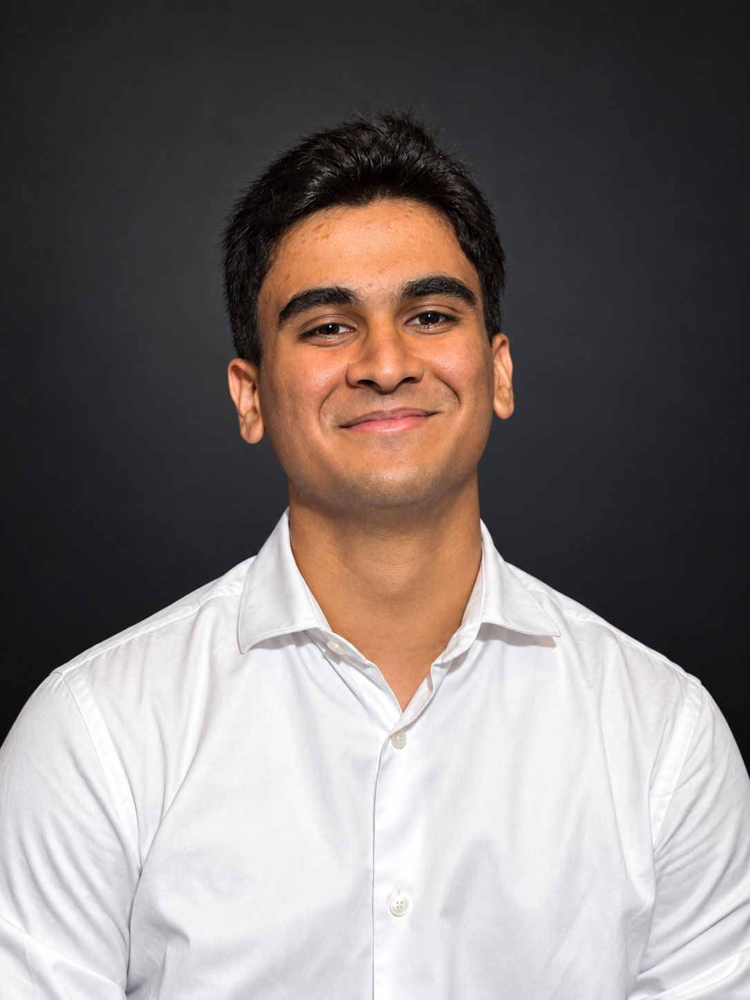

Mechanical engineering · UMass Amherst
MurtazaBoriyawala
I’m a mechanical engineering student graduating in May 2027. I use CAD, engineering analysis, and hands-on manufacturing to turn ideas into practical builds, with a focus on how parts can be made and assembled.

Amherst, Massachusetts
THE TOOLKIT SolidWorks Fusion 360 ANSYS MATLAB 3D Printing Machining
Summer 2026
Folding table A furniture project centered on a table that folds for storage.
View project ↗ Manufacturing / Robotics
Precision, by design. A custom fixture for the UR5e collaborative robot, designed for repeatable positioning and smoother assembly.
SolidWorks · DFMA · Prototyping Explore project ↗ Product design / FEA
Less weight. More purpose. A 27.7 g aluminum wrench with an integrated tire lever, built to withstand 250 in-lb of torque.
SolidWorks · ANSYS · Manual machining Explore project ↗ Mechatronics / Embedded systems
Sense. Decide. Move. An Arduino-powered vehicle that translates ultrasonic input into real-time obstacle avoidance.
Arduino · Circuit design · Testing Explore project ↗ Vehicle systems / Mechanical design
Efficiency in every detail. A compact brake assembly integrating bicycle disc hardware with a custom pedal and hydraulic linkage.
CAD assembly · Packaging · DFMA Explore project ↗
Education andengineering focus EDUCATION UMass Amherst BS Mechanical Engineering
FOCUS Concept to prototype Mechanical design · CAD / FEA
More about my experience ↗